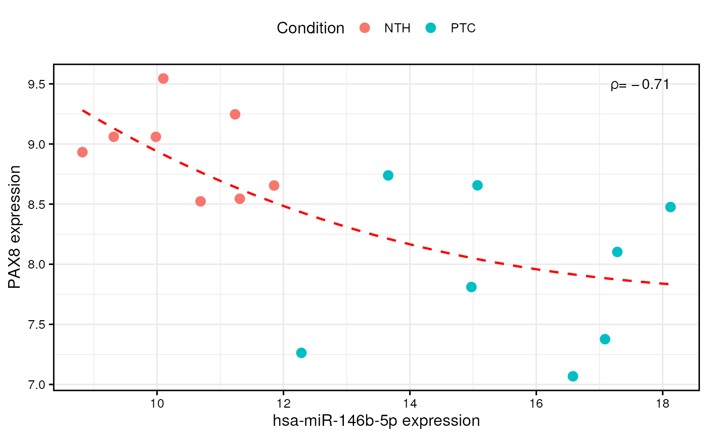

R/visualization.R
plotCorrelation.RdThis function creates a scatter plot that shows the correlation between
miRNA and gene expression levels. This is useful after correlation
analysis performed through the mirnaIntegration() function, to
graphically visualize the quantitative effect of miRNA dysregulations on
target gene expression. Furthermore, this function performs linear/monotonic
regression to better represent the relationships between miRNA-target pairs.
plotCorrelation(
mirnaObj,
mirna,
gene,
condition = NULL,
showCoeff = TRUE,
regression = TRUE,
useRanks = FALSE,
lineCol = "red",
lineType = "dashed",
lineWidth = 0.8,
pointSize = 3,
colorScale = NULL,
fontSize = 12,
fontFamily = "",
legend = "top",
borderWidth = 1,
allBorders = TRUE,
grid = TRUE
)A MirnaExperiment object
containing miRNA and gene data
The name of the miRNA for which we want to observe the correlation
The name of the gene for which we want to observe the correlation
It must be NULL (default) to plot expression based on the group variable used for differential expression analysis. Alternatively, it must be a character/factor object that specifies group memberships (eg. c("healthy, "healthy", "disease", "disease"))
Logical, whether to show the correlation coeffficient or not. Note that the "R" is used for Pearson's correlation", "rho" for Spearman's correlation, and "tau" for Kendall's correlation. Default is TRUE
Logical, whether to display a linear/monotonic regression line that fits miRNA-gene correlation data. Default is TRUE
Logical, whether to represent non-parametric correlation analyses (Spearman's and Kendall's correlations) through rank-transformed data. Note that in this case, linear regression is performed on ranked data instead of monotonic regression. Default is FALSE
It must be an R color name that specifies the color of
the regression line. Default is red. Available color formats include
color names, such as 'blue' and 'red', and hexadecimal colors specified
as #RRGGBB
It specifies the line type used for the regression line. It must be either 'blank', 'solid', 'dashed' (default), 'dotted', 'dotdash', 'longdash' or 'twodash'
The width of the fitted regression line (default is 0.8)
The size of points in the correlation plot (default is 3)
It must be a named character vector where values
correspond to R colors, while names coincide with the groups specified in
the condition parameter (eg. c("healthy" = "green", "disease" = "red")).
Default is NULL, in order to use the default color scale. Available color
formats include color names, such as 'blue' and 'red', and hexadecimal
colors specified as #RRGGBB
The base size for text elements within the plot. Default is 12
The base family for text elements within the plot
The position of the legend. Allowed values are top,
bottom, right, left and none. The default setting is top to show
a legend above the plot. If none is specified, the legend will not be
included in the graph.
The width of plot borders (default is 1)
Logical, whetether to show all panel borders, or just the bottom and left borders. Default is TRUE
Logical, whether to show grid lines or not. Default is TRUE
An object of class ggplot containing the correlation scatter plot.
When non-parametric correlation has been performed with the
mirnaIntegration() function, a regression line can be fitted through
monotonic regression on expression levels, or through linear regression
performed on rank-transformed data. Since, ranks do not correspond to real
expression values, the default option is to perform monotonic regression
to fit a monotonic curve. To do so, this function makes use of the MonoPoly
R package, which implements the algorithm proposed by Murray et al. in 2016.
K. Murray, S. Müller & B. A. Turlach (2016) Fast and flexible methods for monotone polynomial fitting, Journal of Statistical Computation and Simulation, 86:15, 2946-2966, DOI: 10.1080/00949655.2016.1139582.
# load example MirnaExperiment object
obj <- loadExamples()
# perform miRNA-target integration
obj <- mirnaIntegration(obj)
#> Since data derive from paired samples, a correlation test will be used.
#> Performing Spearman's correlation analysis...
#> A statistically significant correlation between 215 miRNA-target pairs was found!
# plot correlation between miR-146b and PAX8 with monotonic regression curve
plotCorrelation(obj, "hsa-miR-146b-5p", "PAX8", condition = "disease")
